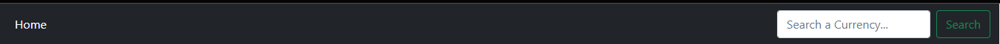

My app is simple and about cryptocurrencies, you can see information about the top 100 cryptocurrencies, or the most popular cryptocurrencies in the global market. In the first glimpse, you can see a nav bar with a search part in the right side and home in the left side, in the searching part you can type a possible combination of letters and after that, if you click on the search button, the app is going to find the cryptocurrencies with that kind of combinations of letters, if not you’re going to get “The currency does not exist … Try again!
If you find a currency, you are going to see the image, name where you can see the combinations of letters and its price. Moreover, if you click on the image, the click is going to take you to the currency in the table of 100 currencies.
Below, you can see a table with 100 cryptocurrencies, with an order or number, next an image of that currency, name of that currency, its price nowaday, the volume in Market Capital, next you can see the profit as revenue or loss in one hour, after in 24 hours, and the last part there is a button in each currency where you can see more information
If you click on the info button you are going to see more information in a pop up window, with the close button or X to close that window.
Moreover, if you scroll down in a few seconds you are going to see an up button, so if you click on it, you will go to the top of the page again. When you come back on the top of the page, the up button is going to disappear.
In the last part, I added a favicon to my page.
I used black color because it’s more formal, that reduces the light on your screen, the color of currencies come by the JSON, even though that combines with every currency on the table. Also, the nav bar is black because of the same concept, just the search is white and the search button is green, and that changes its color when you click on it.
I wanted to convey classicism, formality, precision, tradition, delicacy or refinement. On the other hand, Sans Serif typefaces, as their name indicates -sans is French for without-, lack these details and are also known as dry sans serif typefaces.
I’m consuming this api https://rapidapi.com/coinlore/api/coinlore-cryptocurrency/ , this has a big JSON with a lot of cryptocurrencies
I created three files: main.js, config.js, and renderTable.js. Everything is executing in main.js, you could see the api key and api host as a constant in the config.js, and you could see a lot of code, where you can find the html with bootstrap in renderTable.js. The search and button up code is in main.js, and some event listeners.
As I said previously, you can search a cryptocurrency, if you find it, click on it and that click is going to take you to the currency, you are going to see information about that currency, and if you want more information, you can click on the info button, and you are going to get more information that cryptocurrency.
If you made a mistake trying to find a currency, you can type another currency or possibly combinations of letters, and click on the search button again.
I used a little bit of CSS because my first challenge was to adapt and update the bootstrap in the JS file because mostly CSS comes from or it’s executed by JS. That was a big challenge because it’s my second time using bootstrap.
Well, to be honest, I tried to follow the same visual concept in the project that I saw, and I made some modifications as I said previously, changing colors, fonts with bootstrap and adding new things like some search and up button with JS.